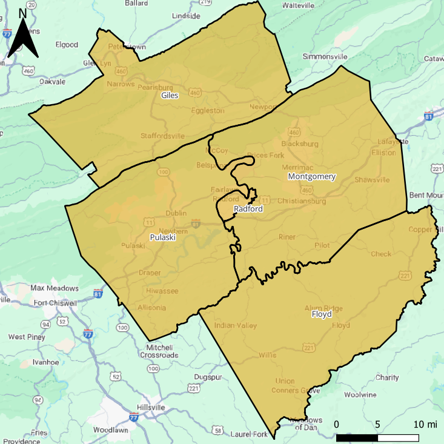
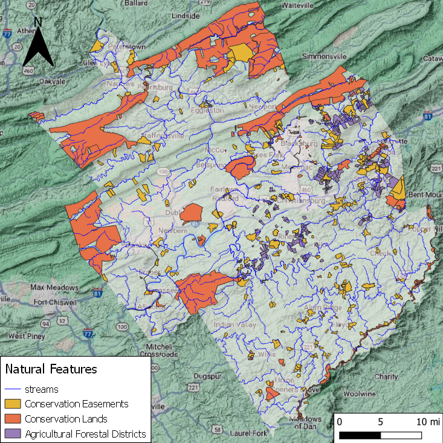
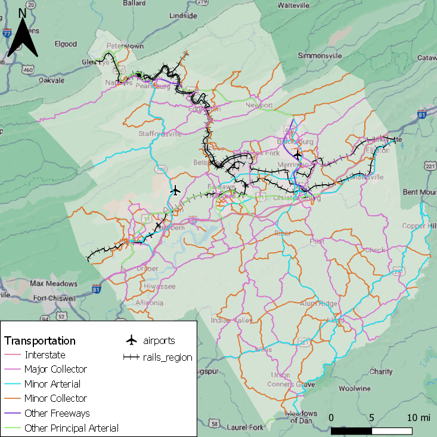
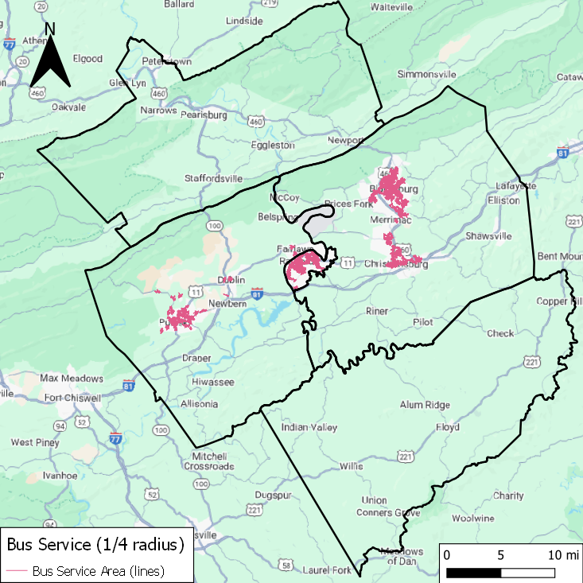
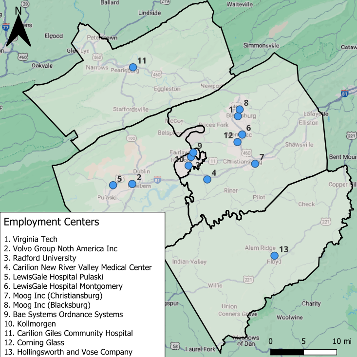
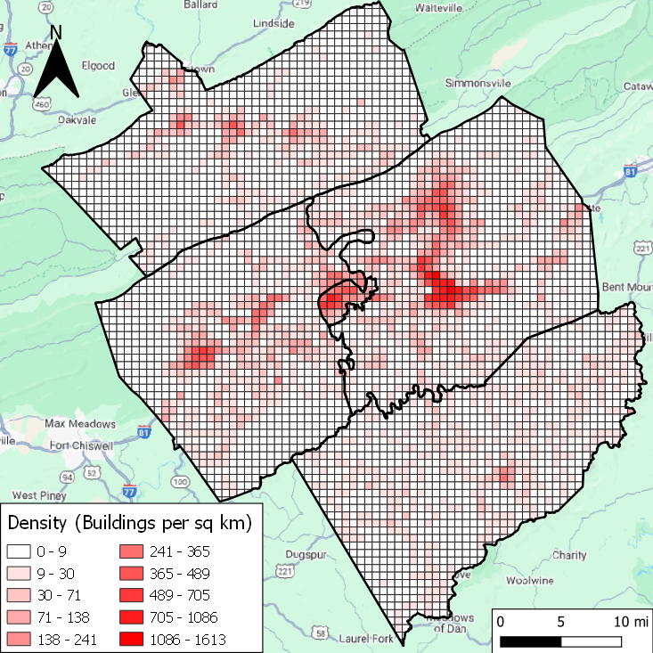
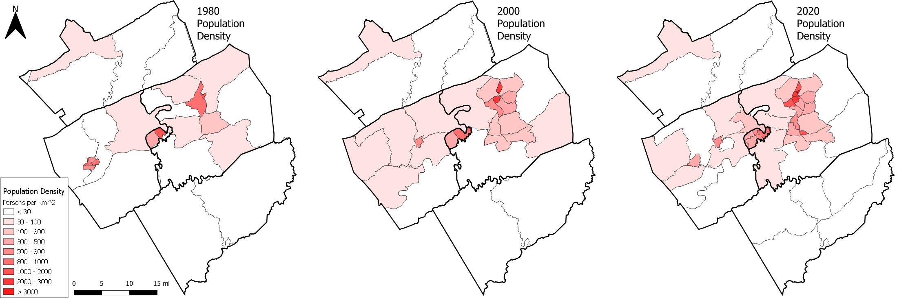

{% include sidebar.html %}
<!-- Sidebar -->
<div class="sidebar">
  <a href="#boundary">Boundary Map</a>
  <a href="#natural">Natural Features</a>
  <a href="#transport">Transportation Map</a>
  <a href="#bus">Bus Service Map</a>
  <a href="#employment">Locations of Employment</a>
  <a href="#build_dense">Building Density</a>
  <a href="#pop_dense">Population Density Over Time</a>
</div>

<div class="content">
    <h1>New River Valley Regional Analysis Maps</h1>
    
    
    
    
    
    
    

</div>